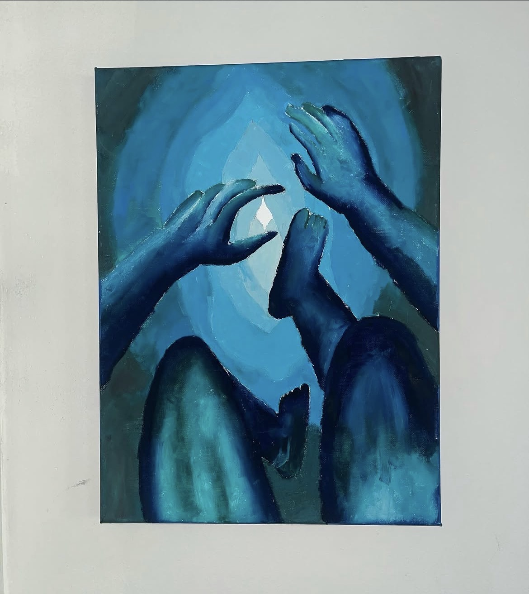
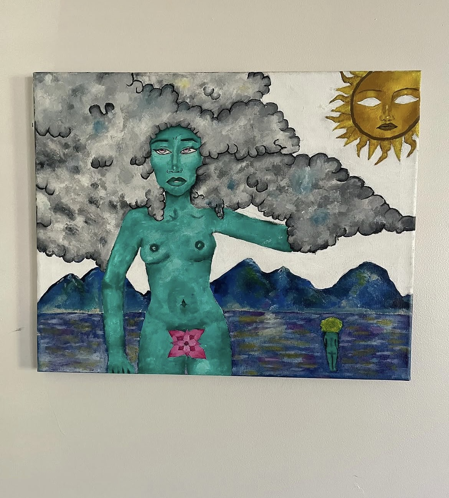
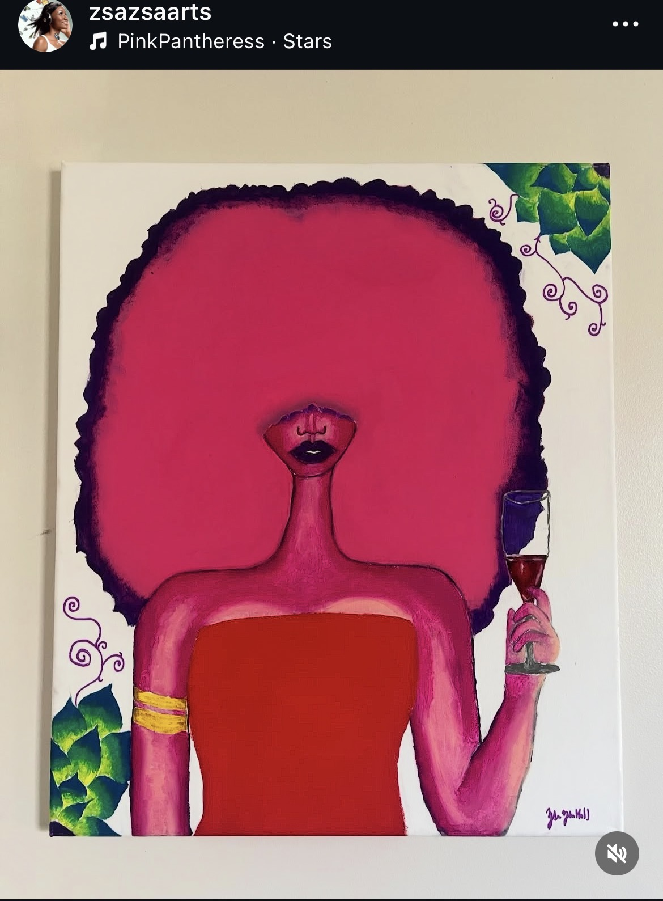

Falling into her

A raw expression of lust, surrender, and the magnetic pull of the feminine form.
Stormborn

I painted this in 2021, during the heart of the COVID lockdown. It was my very first oil painting, created in a time of deep isolation, uncertainty, and personal pain. My family was going through serious health issues, and I felt completely alone going through my own mental . With no words to explain what I was feeling, I turned to a blank canvas. This piece is deeply personal to me, but I'm ready to let her go and live where she's most needed.
- Year painted: 2021
- Medium: Original oil on canvas
- Status: Ready for a new home
Wine in Hand, Head Held High.

Art that captures the moment.